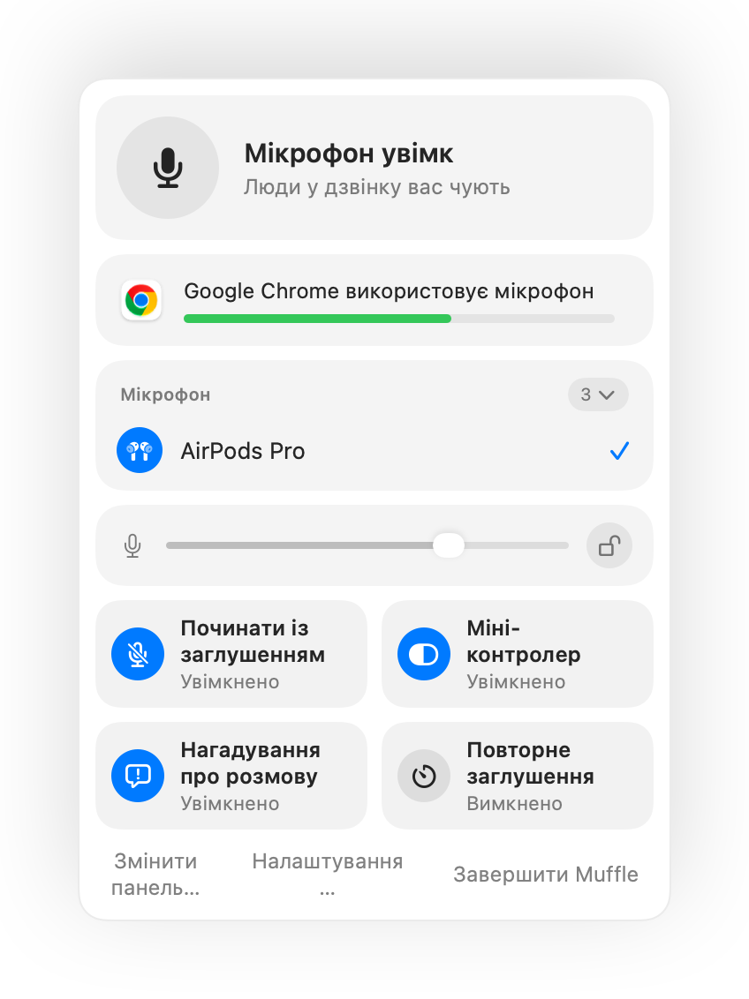

Як заглушити Zoom через AirPods або комбінацію клавіш на Mac
Власна комбінація Zoom Command-Shift-A працює тільки тоді, коли вікно Zoom активне. Коли ви робите нотатки чи показуєте інше вікно під час конференції, пошук кнопки заглушення забирає зайві секунди.
Muffle дає єдине керування звуком для Zoom та інших програм: через AirPods, глобальну комбінацію клавіш або смугу меню. Він вимикає сам мікрофон, тому працює і в застосунку Zoom, і під час дзвінків у браузері.
Спробувати Muffle безкоштовно 3 дніНезабаром у Mac App Store
Як заглушити Zoom звідусіль
- Встановіть Muffle і надайте доступ до мікрофона.
- Приєднайтеся до зустрічі в Zoom як зазвичай.
- Натисніть ніжку AirPods або Control-Option-M, щоб заглушити звук з будь-якого застосунку.
- Утримуйте Control-Option-M із заглушеним мікрофоном, щоб сказати репліку, і відпустіть, щоб знову заглушити.

- Якщо на вашому Mac Zoom сам перехоплює натискання AirPods, комбінація клавіш і смуга меню все одно заглушать звук через Muffle.
- Zoom може показувати активний мікрофон, коли Muffle його вимкнув. Учасники чутимуть тишу.
Питання та відповіді
Чи замінює Muffle кнопку заглушення в Zoom?
Він працює поруч із нею. Muffle вимикає мікрофон для всіх застосунків, тож ви можете заглушити Zoom, не перемикаючись на нього.
Чи можна використовувати push to talk у Zoom?
Так. Поки мікрофон заглушено, утримуйте комбінацію Muffle для розмови. Це працює в Zoom і в будь-якому іншому застосунку.